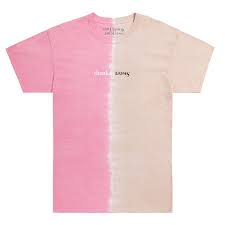
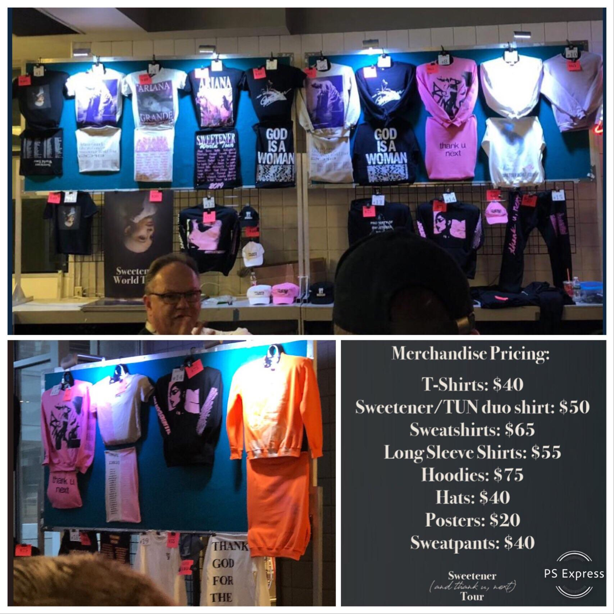
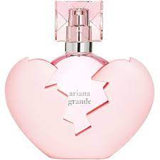
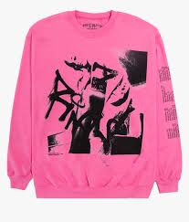
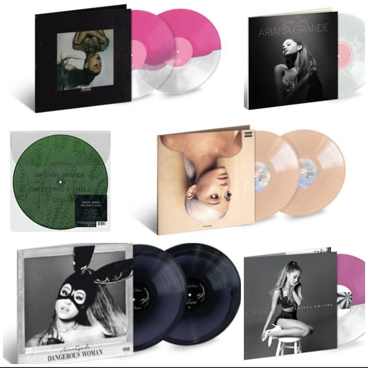

New Ariana Grande Merch
Along with the tour starting new merchandise is being released for the Sweetener and Thank u, Next albums. The merchandise includes new shirts, bags, hats, sweatshirts, perfume, and vinyls that are avaliable on Ariana Grande's website.
 There are plenty new items for fans to show support of their favorite artist Ariana Grande! Those who come in merch and show off how much of a fan they are might catch the eye of some very special people and be asked to move closer to the stage!
  Besides shopping online for your AG merch you can always shop at one of the booths that are at every show. There they have hats, shirts, and many other items to help you make your show a night to remember for years to come.